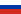
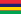
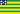
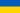
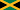

Origem: wikipedia, a enciclopédia livre
Esta página contém a lista lista das Unidades Federativas do Brasil
por Índice de Desenvolvimento Humano Municipal (IDH-M), com valores
publicados pelo PNUD Brasil
os dados são do Atlas do Desenvolvimento Humano do Brasil 2013, feito com base nos dados
do Censo demográfico de 2010
do
Instituto Brasileiro de Geografia e Estatítica
(IBGE). Contém ainda a lista com os dados do estudo "Radar IDHM", feito pelo PNUD Brasil, Ipea e Fundação Pinheiro
com informações produzidas pela Pesquisa Nacional por Amostra de Domicílio (PNAD) Contínua do IBGE em 2017.[1]
| Posição | Unidade Federativa | IDH-M | País Comparável | ||
|---|---|---|---|---|---|
| Posição em 2017 |
Comparação com 2016 |
Em 2017[1] | Em 2016[1] | ||
| 1 | ➖(0) | Distrito Federal | 🔻 0,850 | 0,854 | Portugal |
| 2 | ➖(0) | São Paulo | 🔻 0,826 | 0,831 |  Rússia |
| 3 | ➖(0) | Santa Catarina | ✅ 0,808 | 0,805 | Uruguai |
| 4 | ➖(0) | Rio de Janeiro | ✅ 0,796 | 0,794 |  Mauricia |
| 5 | ➖(0) | Paraná | ➖0,792 | 0,792 | Albânia |
| 6 | ➖(0) | Minas Gerais | ✅ 0,787 | 0,781 | Geórgia |
| 7 | ➖(0) | Rio Grande do Sul | ✅ 0,787 | 0,783 | Geórgia |
| 8 | ➖(0) | Mato Grosso | ✅ 0,774 | 0,772 | Antigua e Barbuda |
| 9 | ➖(0) | Espirito Santo | ✅ 0,774 | 0,772 | Bósnia e Herzegovina |
| 10 | ➖(0) |  Goiás | ✅ 0,769 | 0,768 | Bósnia e Herzegovina |
| 11 | ➖(0) | Mato Grosso do Sul | ✅ 0,766 | 0,763 | México |
| 12 | ➖(0) | Roraima | 🔻 0,752 | 0,758 |  Ucrânia |
| 13 | ✔️(0) | Tocantins | ✅ 0,743 | 0,737 | Republica Dominicana |
| 14 | 🔻(1) | Amapá | ✅ 0,740 | 0,738 | Túnisia |
| 15 | ✔️(3) | Ceará | ✅ 0,735 | 0,726 | Mongólia |
| 16 | ✔️(4) | Amazonas | ✅ 0,733 | 0,716 | Mongólia |
| 17 | 🔻(2) | Rio Grande do Norte | 🔻 0,731 | 0,736 | Líbano |
| 18 | 🔻(2) | Pernambuco | 🔻 0,727 | 0,730 |  Jamaica |
| 19 | ➖(0) | Rondônia | ✅ 0,725 | 0,718 | Venezuela |
| 20 | ✔️(1) | Paraíba | ✅ 0,722 | 0,709 | Jordânia |
| 21 | 🔻(4) | Acre | 🔻0,719 | 0,729 | Maldivas |
| 22 | ➖(0) | Bahia | ✅ 0,714 | 0,709 | Filipinas |
| 23 | ➖(0) | Sergipe | ✅ 0,702 | 0,700 | Gabão |
| 24 | ➖(0) | Pará | ✅ 0,698 | 0,693 | Ilhas Marshall |
| 25 | ➖(0) | Piauí | ✅ 0,697 | 0,690 | Ilhas Marshall |
| 26 | ✔️(1) | Maranhão | ✅ 0,687 | 0,682 | Iraque |
| 27 | 🔻(1) | Alagoas | ➖ 0,683 | 0,683 | Iraque |